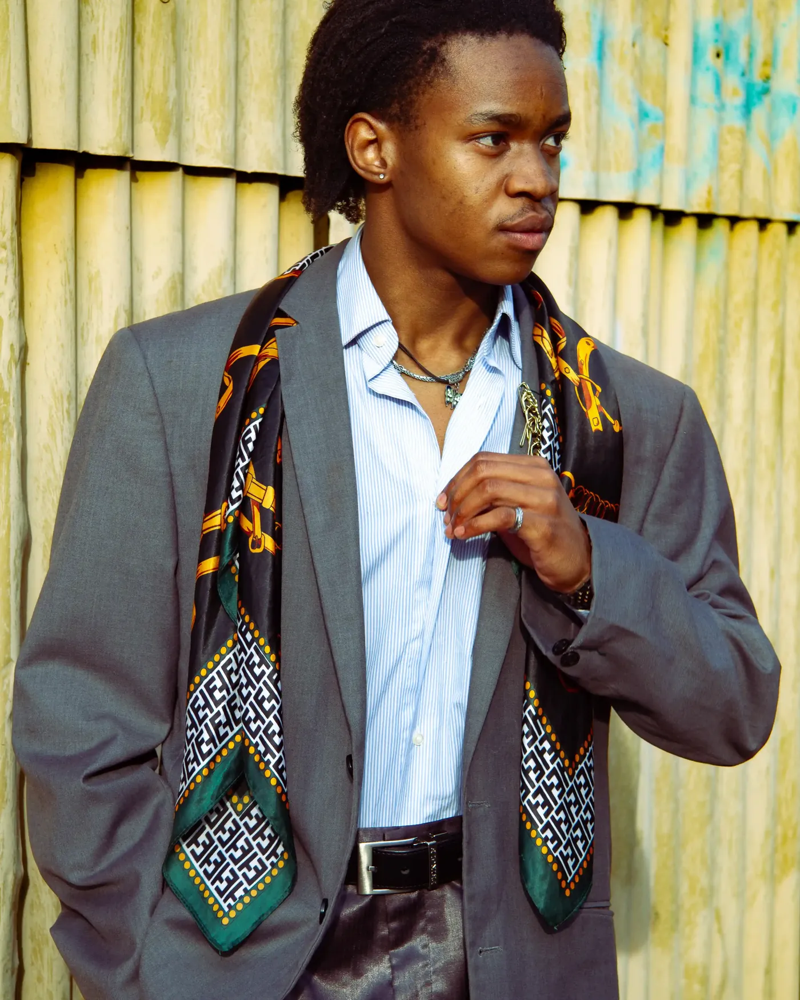
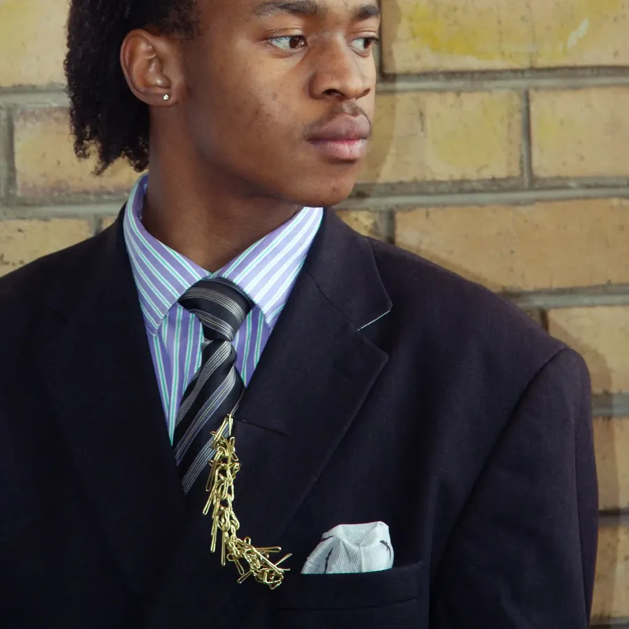
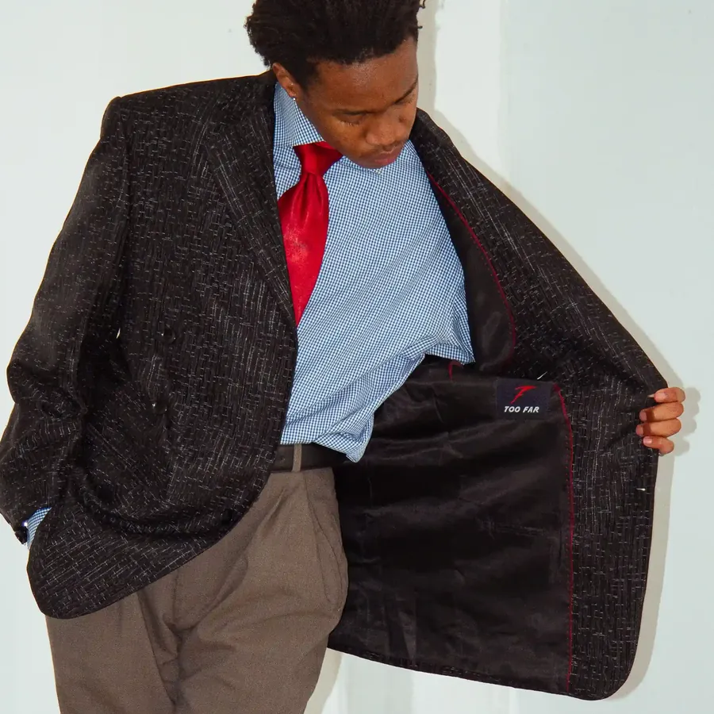
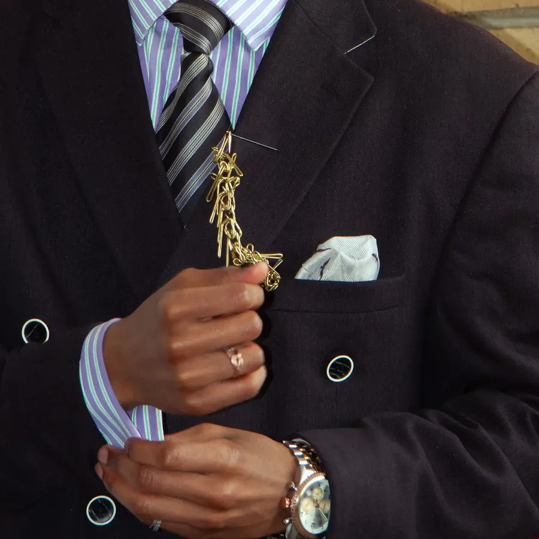
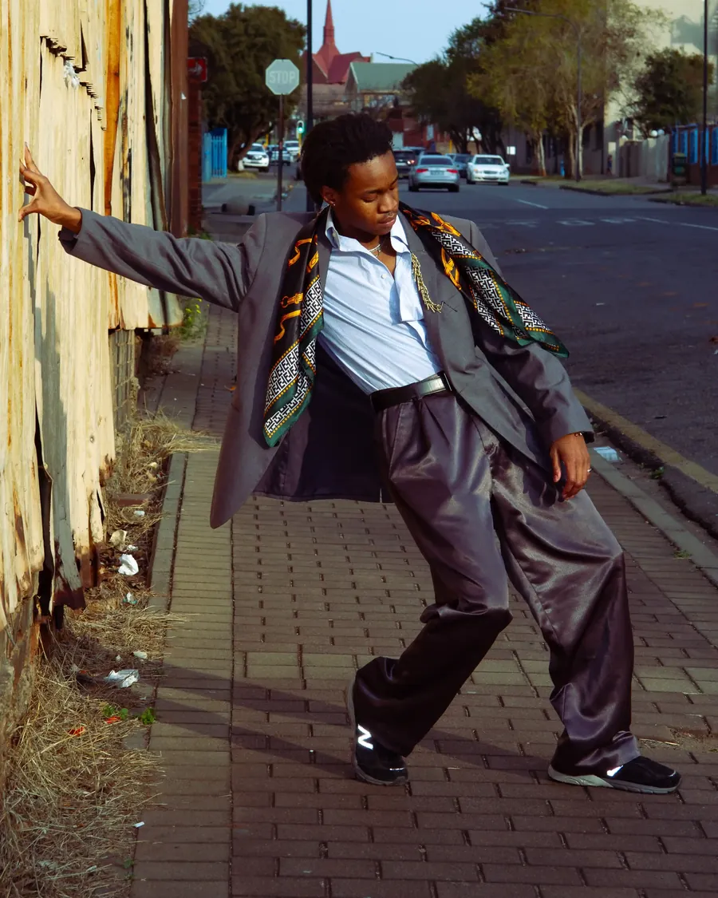
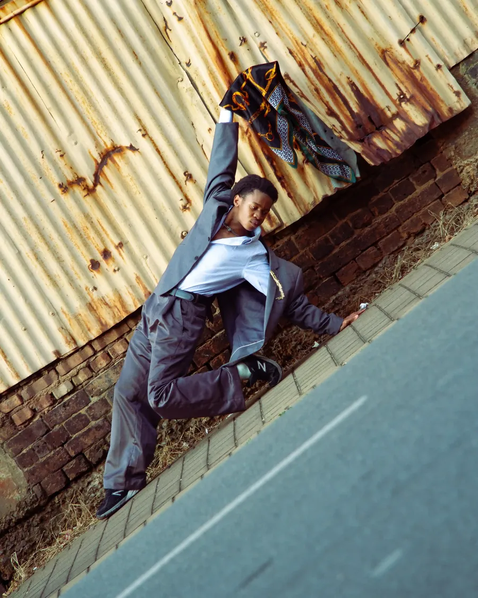
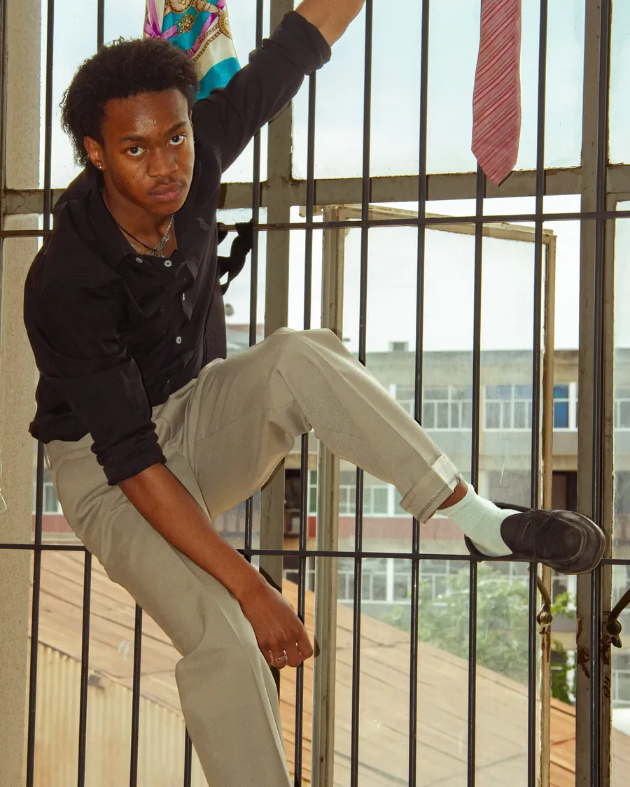
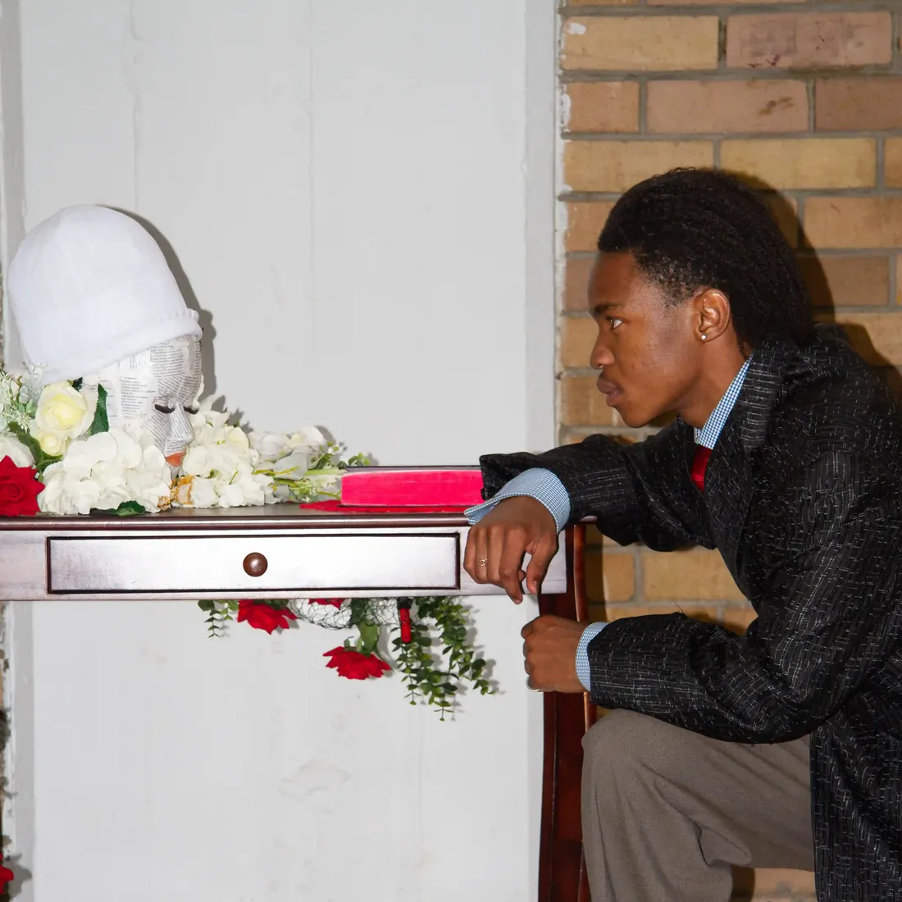

Pre-launch · Archive 001 · 30 suits · Newtown
Always look like money, even when you have none.
A grey suit against rusted iron. A silk scarf where a tie should be. Thirty pieces from the 60s, 70s and 80s, found in Joburg's markets and restored by hand. When the archive opens, the waitlist sees it first.

What's in the bale
The details our grandfathers never skipped.
A tie chain. A folded pocket square. A cufflink done up before leaving the house. Every Vuwani piece is finished with the small things that make cheap cloth look expensive.



Why join
The waitlist sees it first
- 24 hours early
First pick of Archive 001
Every suit is one of one. The waitlist gets a full day before anyone else.
- Newtown
An invite to the fitting room
Brick, steel rails, jazz on vinyl. Get measured, and bring your own thrifted suit to be pinned.
- The journal
The Vuwani Archive
Stories of the men who went to work in suits, and how each piece was found and restored.
Archive 001 · The plates
Pressed suits, raw city.





The Inheritors
Flowers for the men who went before.
They left home at 4 AM for the jobs apartheid allowed: bakery hands, mechanics' assistants, labourers in hard hats. Many still walked to work in a pressed suit. We kneel in ours for them. Vuwani is for the children and grandchildren who saw that standard, and want to carry it into today's hustle.